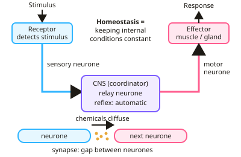

GCSE Biology · Topic 5
Homeostasis and response
Homeostasis and response is about how your body keeps itself stable and reacts to the world around it.
We will look at the nervous system and reflexes, the brain and eye, hormones that control blood glucose, reproduction and stress, and how the kidneys and skin keep water and temperature in balance.
We finish with plant hormones and two required practicals: reaction times, and how plants respond to light and gravity.
- 8 subtopics
- 303 questions
- Free: 5.1 notes and 10 questions
In this topic
- 5.1Homeostasis and the nervous systemFree below · 29 questions
- 5.2The brain and the eye (Biology only)Open in Full Marks · 31 questions
- 5.3Hormones and blood glucoseOpen in Full Marks · 65 questions
- 5.4Hormones in reproductionOpen in Full Marks · 30 questions
- 5.5Kidneys, temperature and plant hormones (Biology only)Open in Full Marks · 56 questions
- 5.6The endocrine system: pituitary, thyroid, adrenal glands, thyroxine and adrenalineOpen in Full Marks · 32 questions
- 5.7Required/core practical: Investigating the effect of a factor on human reaction timeOpen in Full Marks · 24 questions
- 5.8Required/core practical: Investigating plant responses to light and gravity (tropisms)Open in Full Marks · 36 questions
5.1 · Free notes
Homeostasis and the nervous system

Key points
- Homeostasis is keeping internal conditions constant, such as blood glucose, body temperature and water levels.
- Control systems have receptors, a coordination centre (brain, spinal cord or pancreas) and effectors (muscles or glands).
- The nervous system: receptor → sensory neurone → CNS → motor neurone → effector.
- Reflex actions are automatic and rapid, passing through a relay neurone without the conscious brain.
- At a synapse, chemicals diffuse across the gap between neurones to pass on the signal.
In more detail
- Why homeostasis matters: enzymes and cells need steady conditions. Too much or too little glucose, water or heat stops enzymes and cells working properly.
- Negative feedback: if a level rises above normal, the response brings it back down; if it falls, the response brings it back up. This keeps conditions within a narrow range.
- Reflex arc example: touching a hot plate → receptor in the skin → sensory neurone → relay neurone in the spinal cord → motor neurone → muscle contracts and pulls the hand away.
- Synapse step by step: an impulse reaches the end of a neurone, a chemical (neurotransmitter) is released, diffuses across the gap, binds to receptors on the next neurone and starts a new impulse.
Practice
Homeostasis and the nervous system: 10 questions
Pick an answer to check it, or open the answer for the explanation.
1. What is homeostasis?
- Growth of cells
- Maintaining a constant internal environment
- Cell division
- Digestion
Show answer
B: Maintaining a constant internal environment. It keeps conditions optimal for enzymes and cells.
2. Which is an effector?
- Eye
- Brain
- Muscle
- Sensory neurone
Show answer
C: Muscle. Effectors are muscles or glands that bring about a response.
3. What is the correct order of a reflex arc?
- Receptor, motor, relay, sensory, effector
- Receptor, sensory, relay, motor, effector
- Effector, sensory, relay, receptor
- Brain, receptor, effector
Show answer
B: Receptor, sensory, relay, motor, effector. The impulse travels from receptor to effector through the relay neurone.
4. Why are reflexes important?
- They help us learn
- They are fast and protect us from harm
- They control hormones
- They store memories
Show answer
B: They are fast and protect us from harm. They happen without conscious thought.
5. How does a signal cross a synapse?
- Electrical impulse jumps
- Chemicals diffuse across the gap
- Blood carries it
- Hormones in the plasma
Show answer
B: Chemicals diffuse across the gap. Neurotransmitters diffuse to the next neurone.
6. Which of these is controlled by homeostasis?
- Eye colour
- Blood glucose concentration
- Height
- Blood group
Show answer
B: Blood glucose concentration. Homeostasis keeps internal conditions within set limits.
7. What type of neurone carries information from a receptor to the CNS?
- Motor neurone
- Sensory neurone
- Relay neurone
- Effector neurone
Show answer
B: Sensory neurone. Motor neurones carry impulses away from the CNS instead.
8. Why must internal conditions such as body temperature and pH be kept within narrow limits?
- Neurones only work at a fixed temperature
- Hormones cannot be made at other conditions
- Cells need to stay completely inactive
- Enzymes work best at their optimum conditions
Show answer
D: Enzymes work best at their optimum conditions. Enzymes and cell processes work best at optimum temperature and pH. Outside these limits enzymes work more slowly or become denatured.
9. A signal travels 1.2 m along a motor neurone at 60 m/s. How long does it take?
- 0.02 s
- 0.2 s
- 72 s
- 50 s
Show answer
A: 0.02 s. Time = distance ÷ speed = 1.2 ÷ 60 = 0.02 s. Multiplying (72 s) or inverting the formula (50 s) gives the wrong answers.
10. What is the role of a relay neurone in a reflex arc?
- It detects the stimulus
- It stores memories of the stimulus
- It connects sensory and motor neurones in the CNS
- It carries impulses to the effector
Show answer
C: It connects sensory and motor neurones in the CNS. Relay neurones lie within the spinal cord or brain and pass the impulse from the sensory neurone to the motor neurone.
Keep going in Full Marks
Full Marks has 29 questions on Homeostasis and the nervous system (19 more than here), set out in practice levels. You also get notes and 3D models for all 8 subtopics of Homeostasis and response, plus games, timed exams and past papers.
On your exam board
- AQATopic 5: Homeostasis and response
- OCR ATopic B3: Organism level systems
- OCR BTopic B4: Using food and controlling growth, Topic B5: The human body – staying alive
- EdexcelTopic 2: Cells and control, Topic 6: Plant structures and their functions, Topic 7: Animal coordination, control and homeostasis
- CambridgeTopic 13: Excretion in humans, Topic 14: Coordination and response, Topic 16: Reproduction